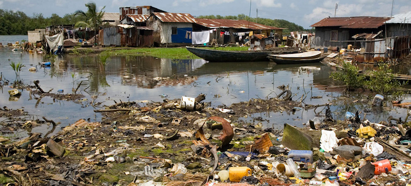
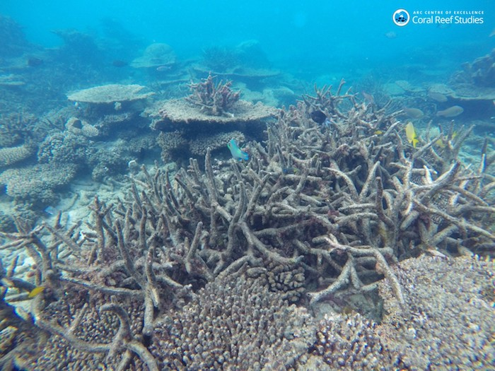

The oceans are so vast and deep that until fairly recently, it was widely assumed that no matter how much trash and chemicals humans dumped into them, the effects would be negligible. Proponents of dumping in the oceans even had a catchphrase: 'The solution to pollution is dilution.'
There is evidence that the oceans have suffered at the hands of mankind for millennia, as far back as Roman times. But recent studies show that degradation, particularly of shoreline areas, has accelerated dramatically in the past three centuries as industrial discharge and runoff from farms and coastal cities has increased.
Pollution is the introduction of harmful contaminants that are outside the norm for a given ecosystem. Common man-made pollutants that reach the ocean include pesticides, herbicides, chemical fertilizers, detergents, oil, sewage, plastics, and other solids. Many of these pollutants collect at the ocean's depths, where they are consumed by small marine organisms and introduced into the global food chain.Scientists are even discovering that pharmaceuticals ingested by humans but not fully processed by our bodies are eventually ending up in the fish we eat." - National Geographic, Marine Pollution
The measured warming of the planet is not hypothetical. Nor are its effects, which are happening now, not decades from now. An ecological catastrophe is unfolding off Australia’s coast: Humans are killing the Great Barrier Reef, one of the world’s greatest natural wonders, and there’s nothing Australians on their own can do about it. We are all responsible.
An ocean water temperature spike last year caused a massive “bleaching” event, in which colorful corals turned an antiseptic, sickly white. Scientists believe that the reef will never be the same.
“The chances of the northern Great Barrier Reef returning to its pre-bleaching assemblage structure are slim given the scale of damage that occurred in 2016 and the likelihood of a fourth bleaching event occurring within the next decade or two as global temperatures continue to rise,” a major new study in the journal Nature reported last week.
Alarmingly, but perhaps not surprisingly, the Australian government reports that sections of the reef are getting slammed again this year.
Corals are polyp creatures that build their iconic limestone structures in cooperation with photosynthesizing algae. When ocean temperatures increase, the algae emit poisons. The corals then reject their symbiotic partners and succumb to disease and death. This occurred across a vast section of the northern Great Barrier Reef last year." - Washington Post, The Great Barrier Reef is dying